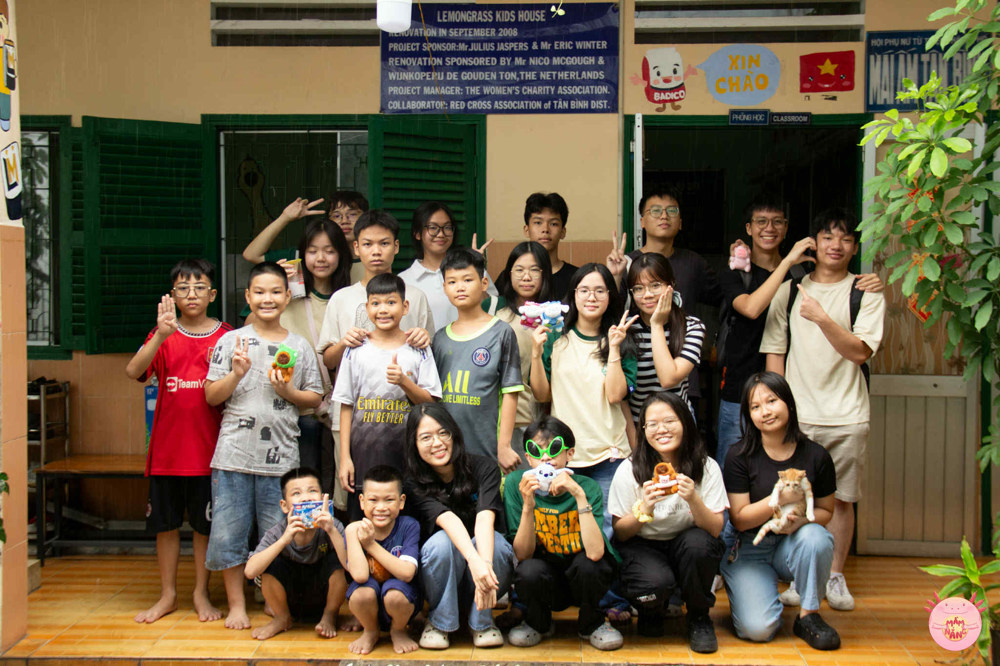

Mầm Nắng is a youth-led initiative dedicated to supporting children in remote highland areas through education and community engagement. By combining on-site volunteer activities with creative storytelling, the project provides essential learning materials while raising awareness about educational inequality.

"Mầm Nắng"
Youth initiative supporting highland children
August 2024 - July 2025
Many children in isolated regions lack access to basic educational tools and opportunities. We believe that every child deserves the chance to learn, grow, and dream — no matter where they live. Through hands-on support and authentic storytelling, we aim to bridge this gap and inspire others to join in building a more equitable future.
Our Contributions
Directed a youth-led initiative project supporting children in remote areas through education and community activities.
Organized 2 field trips to highland regions, delivering 200+ gifts and learning materials to underprivileged students.
Documented the journeys through photography, producing a collection shared with 3,000+ online followers to raise awareness and inspire community engagement.